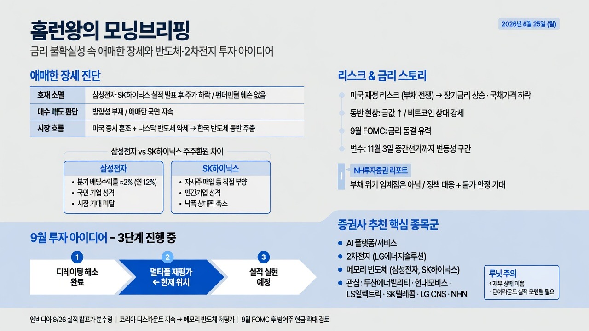

슈퍼개미 이세무사TVMORNING DIGEST · 2026-08-25 · 슈퍼개미 이세무사TV🎬 영상
홈런왕의 모닝브리핑 — 금리 불확실성 속 애매한 장세와 반도체·2차전지 투자 아이디어

01핵심 개요
항목
내용
방송일
2026년 8월 25일 (월)
진행자
홈런왕 (밸런스 투자 아카데미)
채널
슈퍼개미 이세무사TV
핵심 키워드
애매한 장세, 금리, FOMC, 코리아 디스카운트, 반도체, 2차전지
시장 톤
호재 소멸 후 방향성 부재, 매수·매도 판단 모두 어려운 국면
주요 리스크
미국 재정(부채) 리스크, 장기금리 상승, 9월 FOMC 이후 변동성
주요 기회
AI 플랫폼/서비스, 2차전지, 메모리 반도체(코리아 디스카운트 해소 기대)
02핵심 기능/내용 구조
애매한 장세 진단 — 호재 소멸 후 방향성 부재: 삼성전자·SK하이닉스의 실적 발표가 끝나며 재료가 소멸돼 주가가 하락했지만, 펀더멘털 훼손은 아니어서 매수도 매도도 판단하기 어려운 국면이 지속되고 있다고 진단한다 (00:22).
한국 반도체 vs 미국 증시 혼조: 미국 증시가 혼조세로 마감했고 반도체 약세 영향으로 나스닥이 주춤하면서, 한국 반도체 시장도 쉽지 않은 흐름으로 이어질 가능성을 언급한다 (03:35).
삼성전자 vs SK하이닉스 — 주주환원 방식의 차이: 삼성전자(우선주 포함)는 분기 배당수익률 약 2%(연 약 12%)로 나쁘지 않은 배당임에도 시장 눈높이에 못 미치는 반면, SK하이닉스는 배당보다 직접적 주가 부양(자사주 등)에 나서며 낙폭이 상대적으로 축소되는 모습을 보였다. 화자는 이를 '민간기업(SK하이닉스) vs 국민기업(삼성전자)' 성격 차이로 해석한다 (04:25).
미국 재정 리스크와 금리 스토리(NH투자증권 리포트): 세계가 '부채 전쟁' 국면에 있으며, 시장이 미국 재정 리스크를 우려하기 시작했다는 진단을 전한다. 국채금리 상승·국채가격 하락은 미국 신뢰도 저하 신호로 해석되며, 금값 상승과 비트코인 상대적 강세가 동반되고 있다고 설명한다. 다만 부채 위기의 임계점은 아니며, 정책 대응과 물가 안정이 장기금리를 안정시킬 것이라는 전망도 함께 소개한다 (05:02).
9월 FOMC 전망과 중간선거 변수: 9월 금리 동결이 유력하며, 11월 3일 중간선거까지는 시장이 버텨야 하는 구간으로 진단한다. 한국은 상대적으로 여유가 있으나 미국 쪽 불안 요인이 지속된다고 평가한다 (06:25).
투자 아이디어 — 변동성 국면의 단계적 해석: 7월 하락은 레버리지·감마헤지가 변동성을 키운 결과이며, 현재는 '디레이팅 해소 → 멀티플 재평가 → 실적 실현'의 3단계 중 2단계로 진입 중이라는 분석을 전한다. 8월 반등은 반도체 등 소수 업종 중심이며 확산은 아직 초기 단계라고 본다 (07:10).
증권사 추천 종목군 — AI 플랫폼·2차전지·반도체: 금리·실적·정책 세 축을 동시에 충족한다는 논리로 국내 AI 플랫폼/서비스와 2차전지를 추천하며, 반도체(삼성전자·SK하이닉스), LG에너지솔루션, 두산에너빌리티, 현대모비스, LS일렉트릭, SK텔레콤, LG CNS, NHN, 루닛 등을 관심 종목으로 제시한다 (08:33).
루닛(Lunit)에 대한 의문 제기: 여러 증권사가 재무 상태가 좋지 않은 루닛을 반복 추천하는 점에 화자가 의아함을 표하며, 국내 대표 의료 AI 기업이지만 턴어라운드를 입증할 실적 모멘텀이 필요하다고 지적한다 (09:22).
9월 FOMC 이후 리스크 — 은행 규제 완화와 AI 자본조달: 하나투자증권 리서치를 인용해 9월 FOMC 이후 은행 규제 완화와 AI 자본조달 이슈로 달러 신뢰도가 방향성을 잃을 수 있다는 우려를 전하며 주의를 권고한다 (11:56).
9월 월간 전략 — 메모리 반도체 사이클과 코리아 디스카운트: 9월은 비메모리 사이클과 유사해지는 메모리 반도체 국면으로, 9월 16일 FOMC 이후 방어주·현금 비중 확대를 권고하는 리포트를 소개한다. 엔비디아 8월 26일 실적 발표가 모멘텀 확장의 분수령이 될 것으로 보며, 미·중 반도체(마이크론, 창신반도체)는 고평가를 받는 반면 한국 반도체는 여전히 저평가(코리아 디스카운트)라고 지적한다 (12:36).
03기술적 맥락
감마헤지(Gamma Hedging)와 레버리지: 7월 변동성 확대의 원인으로 지목된 개념으로, 옵션 매도자가 델타 중립을 유지하기 위해 기초자산을 추가 매수·매도하면서 가격 변동을 증폭시키는 메커니즘이다. 레버리지 포지션 청산과 결합하면 변동성이 자기강화적으로 커질 수 있다.
BOM(Bill of Materials) 내 메모리 비중: 엔비디아 등 AI 가속기 제조원가에서 메모리(HBM 등)가 차지하는 비중이 급등했음에도 이익률이 유지되고 있다는 점이 메모리 반도체 업황 개선의 근거로 제시된다.
디레이팅/리레이팅(Multiple Re-rating): 실적 대비 주가 멀티플(PER 등)이 낮아지는 것을 디레이팅, 다시 높아지는 것을 리레이팅이라 하며, 화자가 인용한 리포트는 현재 시장이 디레이팅 해소 후 멀티플 재평가 단계에 있다고 진단한다.
04전략적 의미
매크로(금리·재정) 변수가 종목 선택보다 우선하는 국면: 실적 재료가 소멸된 이후에는 개별 기업 펀더멘털보다 금리·미국 재정 리스크·FOMC 일정 같은 매크로 변수가 단기 방향성을 좌우하므로, 이벤트 캘린더(9월 16일 FOMC, 11월 3일 중간선거) 중심의 리스크 관리가 중요해진다.
주주환원 방식이 밸류에이션 프리미엄에 영향: SK하이닉스처럼 배당보다 직접적 주가 부양책을 쓰는 기업이 시장의 눈높이에 더 부합해 하락장에서도 상대적으로 방어력을 보이는 반면, 배당 중심 환원은 수익률이 나쁘지 않아도 시장 평가에서 소외될 수 있다는 시사점을 준다.
코리아 디스카운트는 구조적 리스크로 지속: PER 기준으로 마이크론과 동일 선상에 놓으면 SK하이닉스·삼성전자가 이론상 수배 상승 여력이 있음에도, 국내 시장 규모의 한계로 저평가가 좀처럼 해소되지 않는다는 점은 반도체 투자 시 밸류에이션 갭이 쉽게 메워지지 않을 수 있음을 시사한다.
05핵심 워크플로우 또는 비교표
구분
삼성전자(우선주 포함)
SK하이닉스
주주환원 방식
배당 중심 (분기 배당수익률 약 2%, 연환산 약 12%)
직접적 주가 부양(자사주 매입 등) 중심
하락장 방어력
상대적으로 낙폭 방어 약함
낙폭 축소, 상대적 방어력 확인
화자의 해석
'국민기업' 성격, 배당만으로는 시장 눈높이 미충족
'민간기업' 성격, 시장 친화적 대응
단계
내용
현재 위치
1단계
디레이팅 해소 (7월 과도한 변동성·레버리지·감마헤지 청산)
완료
2단계
멀티플 재평가 (낙폭과대 중심 반등, 8월 반도체 등 소수 업종 집중)
진행 중 (현재)
3단계
실적 실현 (펀더멘털 기반 확산)
미도래, 초기 단계
06활용 시나리오
매크로 이벤트 캘린더 기반 리밸런싱: 9월 16일 FOMC, 11월 3일 중간선거 등 주요 일정을 기준으로 방어주·현금 비중을 사전에 조정하는 전략에 참고할 수 있다.
주주환원 정책 비교를 통한 종목 선별: 동일 업종 내에서 배당 중심 기업과 자사주 매입 등 직접 부양 중심 기업의 하락장 방어력 차이를 비교해 방어적 포트폴리오를 구성하는 데 활용할 수 있다.
코리아 디스카운트 관점의 반도체 밸류에이션 점검: 마이크론·창신반도체 등 해외 비교기업과 PER을 대조해 국내 반도체주의 저평가 정도를 정기적으로 점검하는 체크리스트로 활용할 수 있다.
테마 추천의 교차검증: 여러 증권사가 동시에 추천하지만 재무 펀더멘털이 약한 종목(예: 루닛)에 대해 추천 근거와 실제 실적 모멘텀 유무를 교차 검증하는 리스크 관리 습관에 참고할 수 있다.
07현황 및 전망
8월 25일 기준 국내 증시는 호재 소멸 이후 방향성 부재 상태이며, 미국 증시 혼조와 반도체 약세가 단기 부담 요인으로 작용하고 있다.
9월 FOMC(9월 16일)에서 금리 동결이 유력하지만, 이후 은행 규제 완화·AI 자본조달 이슈로 달러 신뢰도와 장기금리 방향성이 다시 흔들릴 가능성이 제기된다.
8월 26일 예정된 엔비디아 실적 발표가 메모리 반도체를 포함한 AI 밸류체인 모멘텀 확장의 분기점으로 지목되며, 강력한 가이던스 제시 여부가 관건으로 언급된다.
중기적으로는 미·중 반도체 기업 대비 한국 반도체의 코리아 디스카운트 해소가 핵심 관전 포인트로, 화자는 이 격차가 통일 등 구조적 변화 없이는 쉽게 좁혀지지 않을 것이라는 다소 회의적 전망을 덧붙인다.
08용어 사전
용어
설명
FOMC
미국 연방공개시장위원회. 기준금리를 결정하는 회의로, 9월 16일 회의가 시장의 핵심 이벤트로 언급됨
코리아 디스카운트
한국 기업이 실적·펀더멘털 대비 해외(미·중) 동종업계보다 낮은 밸류에이션(PER 등)을 받는 현상
감마헤지
옵션 매도자가 델타 중립을 유지하려고 기초자산을 사고파는 과정에서 가격 변동을 증폭시키는 헤지 기법
디레이팅/리레이팅
실적 대비 주가 배수(PER 등)가 낮아지는 것(디레이팅)과 다시 높아지는 것(리레이팅)
BOM(Bill of Materials)
제품 제조에 필요한 부품·자재 명세. 여기서는 AI 가속기 제조원가 중 메모리 비중을 논할 때 사용